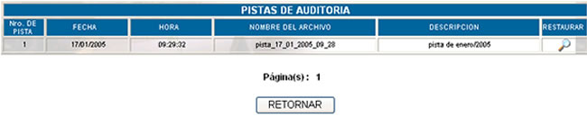
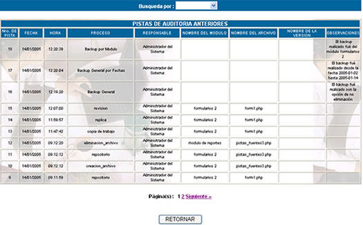

VER
PISTAS DE AUDITORIA
Al hacer click sobre esta opción usted podrá
ver la siguiente lista de pistas de auditoría realizadas.

Nro. de pista; número
correlativo que nos indica el número de pista de auditoría.
Fecha; indica la fecha de creación de la pista de auditoría.
Hora; indica la hora de creación de la pista de auditoría.
Descripción; indica la descripción sobre la pista de auditoría
cuando fué creada.

Nro. de pista; número
correlativo que nos indica el número de proceso en la pista de auditoría.
Fecha; indica la fecha de creación del proceso en la pista de auditoría.
Hora; indica la hora de creación del proceso en la pista de auditoría.
Proceso; indica el proceso registrado en la pista de auditoría. Los valores que puede tomar este campo, dependen de que proceso se ha realizado sobre el sistema. En las pistas de auditoría, se registra todo lo que se haga sobre el sistema, desde la creación de un módulo, hasta los procesos de descarga de archivos.
Nombre del módulo;
nos indica el nombre del módulo que
Nombre del archivo; nos indica el nombre del archivo que